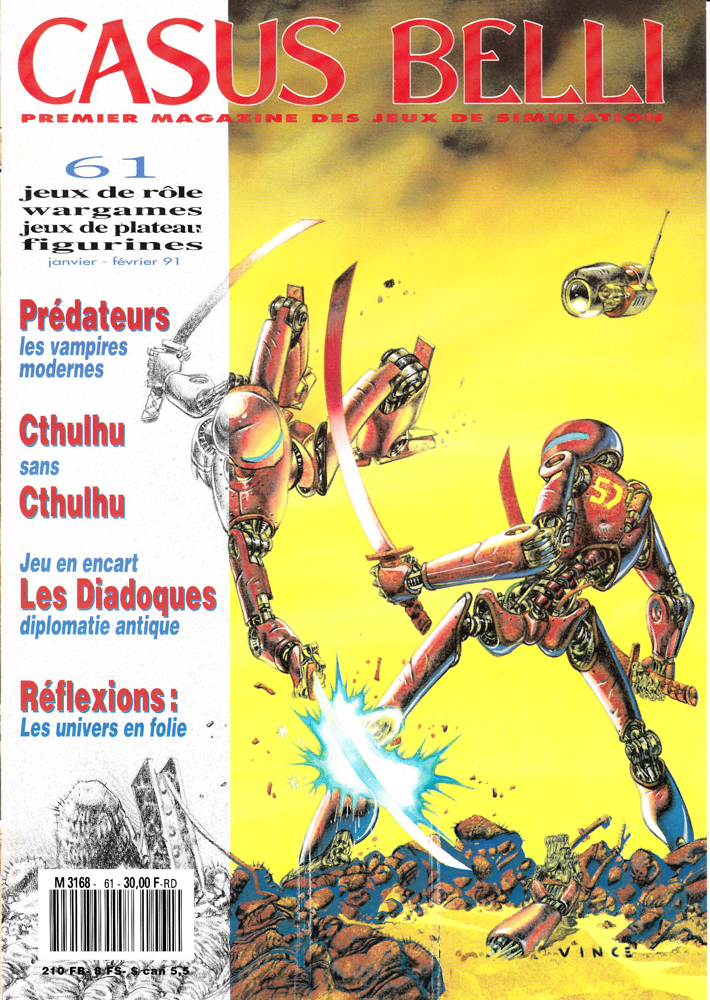

Bonne année 1991 puisqu’il est encore temps !… même si celle-ci débute avec une odeur de poudre et un goût de cendres.
Il y a en effet 35 ans maintenant débutait la première Guerre du Golfe, qui n’aurait pas dû être suivie par une seconde. Après Bouclier du Désert, succédait donc l’opération Tempête du Désert et le déclenchement des offensives par les énormes troupes d’origine diverses (34 pays, pour près d’un million d’hommes engagés), et qui avaient été amassées alors que les mois de crise précédents s’écoulaient.
Ce bimestre janvier-février sera suffisant pour contenir ce conflit, puisque celui-ci se termina le 28 février, avec d’abord une première phase intensive d’opérations aériennes et maritimes (mais avec un résultat plus limité que prévu), et ensuite des opérations terrestres qui seront finalement assez brèves. Quant aux pertes, si celles matérielles sont évidentes pour la « 4ème armée du monde » complètement anéantie, le réel bilan humain est en revanche beaucoup plus incertain, même après toutes ces années écoulées…
Alors que ce conflit débute, Saddam Hussein dont la doctrine politique était foncièrement laïque essaye dans une dernière tentative de dresser les musulmans à ses côtés, en ajoutant précipitamment la mention Allahu akbar sur le drapeau irakien. Il attise également la haine d’Israël en dirigeant les tirs de Scud vers ce voisin, alors même qu’il ne fait pas partie de la coalition. Même si ces tentatives restent vaines, elles allument toutefois des braises pour les années à venir.
En recreusant ma mémoire parce que j’ai un souvenir très net de cette période (même si je ne suis pas personnellement à un âge très adulte) avec les plateaux TV de La 5 ou les vidéos nocturnes sur fond vert des tirs de missile et des bombardements, je me rends compte que ce conflit a été relégué assez loin dans notre Histoire. Difficile en effet de le cataloguer avec tous ses paradoxes : majeur sur les moyens mobilisés, mineur sur les objectifs géostratégiques (libérer le Koweït, hum…). A l’arrivée une guerre pas plus propre que les autres, parce qu’une guerre ne peut pas être « propre », avec comme innovation ses millions de barils de pétrole brûlés ou déversés dans le Golfe par un Irak aux abois ou ses munitions à l’uranium appauvri, et leurs conséquences sur la santé des trouffions.
Intérieurement, en France, toute l’attention est aussi principalement portée sur ce conflit pendant cette période. D’abord avec un contexte qui nous porte depuis maintenant 35 ans : le plan Vigipirate qui est déclenché pour la première fois en cette période. Et aussi une crise ministérielle intérieure avec la démission du ministre de la Défense, Jean-Pierre Chevènement, farouchement opposé à l’intervention.
Dans les autres grands événements qui ont des répercussions jusqu’à aujourd’hui, on peut citer aussi le vote de la loi Evin qui petit à petit va faire sortir de la cigarette de l’espace public, à une époque où tout le monde clope sur les plateaux TV, et que les bureaux et les restos sentent la cigarette froide ou sont noyés dans des nuages de fumée en fonction du moment. Bonne nouvelle pour la santé publique, et moins bonne nouvelle pour Casus Belli puisque les publicités Lucky Strike qui en ornaient les 4ème de couverture vont être contraintes de disparaître…
Justement, il est temps maintenant de parler de ce premier Casus de 1991, enluminé par une couverture de Vince :

La première grosse actualité de cette nouvelle année est le déménagement d’Excelsior Publications, la maison mère de Casus Belli, du centre de Paris (rue de la Baume dans le 8ème arrondissement) pour s’installer désormais à proximité de l’Aquaboulevard en quasi-périphérie. Petite pensée émue de cet immeuble de bureau impersonnel, où la rédaction de Casus était logée après un dédale de couloirs digne de l’exploration d’un donjon, et dont la princesse éplorée (ou plutôt les princesses) se tenait à proximité avec la rédaction d’un autre titre de presse du groupe, Jeune et Jolie. Tristan ne manquait ainsi pas de relever que parfois les mannequins pour cet autre magazine prenaient le mauvais embranchement et rejoignaient ainsi bien involontairement le boys club qui faisait Casus (enfin pas complètement boys non plus avec la présence d’Agnès Pernelle à la rédaction).
Or donc, Didier dédie son édito à cette aventure de fin d’année et le risque que Casus ait failli paraître en retard, même si Jean-Marie Noël était maintenant aux manettes. Mais 35 ans plus tard, je peux publier cette revue à la date d’un délai que Casus n’aura pas dépassé (contrairement au léger décalage de ma revue, hum…).
On passe aux actualités ludiques du bimestre, d’abord pour les conventions passées et à venir, pour relever deux éléments particulièrement inquiétants, conséquence manifeste du dérapage médiatique de l’Affaire Carpentras : le Jetdor de Vitrolles, alors une des plus grosses conventions annuelles en France et prévue de longue date pour ce début 1991 est annoncée comme annulée après le retrait brutal par le proviseur de mettre à disposition le lycée Pierre Mendès-France ; phénomène similaire pour Odyssea 90 à Marseille en fin d’année qui a dû déménager en catastrophe du lieu prévu, le lycée Périer, vers le Palais des Congrès - en cause ici le rectorat d’Aix en Provence prétextant les lésions « psychiques » liées au loisir et la promotion commerciale des sponsors de la manifestation, vous savez ces World Companies que sont les éditeurs de JDR. Juste lamentable !
Pendant que de grandes conventions disparaissent puisque le Jetdor ne sera jamais réédité, d’autres prennent leur essor avec les Joutes du Téméraire à Nancy (à encore 3h de train Corail de Paris) avec une couverture médiatique en direct de Radio France ! 1990 c’était aussi le centenaire de la naissance de Lovecraft mais qui est encore tellement confidentiel que seules quelques rares initiatives associatives ont célébré le symbole : ainsi à Orléans avec le Dé Strié et un festival du fantastique autour du maître de Providence, et proposant au public exposition, GN Années 1920 et Killer, diffusion de films mais omission du rédacteur ou des organisateurs, pas de parties de jeu de rôle avec l’AdC ?
Avant qu’on ne passe au détail du copieux contenu de ce numéro, je vous recommande un tour sur la page 18 où de façon très discrète, Casus innove en proposant la première mouture de licence libre ludique, dix ans avant l’OGL, avec SimulacreS et l’initiative de Pierre Rosenthal, ce qui favorisera la création de plein d’univers et JDR amateur. La vraie première scène indé !
On passe aux jeux en vogue et aux critiques. Après l’avalanche de Noël, les éditeurs reprennent leur souffle. Casus Belli fête avec raison la sortie du Hors-Série de Laelith. Eurogames continue avec des ambitions élevées pour la nouvelle année : une nouvelle édition de Zargos et Vikings pour Cry Havoc, dont on trouvera des revues plus détaillées dans ce numéro. Et deux wargames français sur un marché déserté depuis les dernières productions Jeux Descartes qui commencent à dater. Sont donc annoncés Moskva et Kharkov, mais qui verront le jour beaucoup plus tardivement finalement, à l’instar du 2ème volet pour Dragon Noir (L’Epreuve). La morosité économique de cette année 1991 à venir n’est probablement pas complètement étrangère à ces très longs décalages.
Flamberge vit d’ailleurs ses derniers mois : si Prédateurs est sorti et revu longuement dans l’Epreuve du Feu de ce numéro, American Grim pour Les Divisions de l’Ombre bien qu’annoncé ne paraîtra finalement jamais. Seules les locomotives du moment continuent donc à occuper le marché. Hexagonal d’abord avec l’écran (moche)…
… pour Shadowrun. Jeux Descartes ensuite avec La Bataille pour le Soleil d’Or pour Star Wars et Vivre et Laisser Mourir pour James Bond. Oriflam avec le mythique La France pour Hawkmoon, Les Secrets des Anciens pour Runequest, et déjà la VF de la 2ème édition de Cyberpunk. Pour ce dernier, et contrairement à l’écran de Shadowrun chez Hexagonal, Oriflam se paye une couverture originale d’Alain Gassner, plus mythique que celle de la VO (jugez par vous-même) :
Enfin Siroz avec encore un prochain supplément, Demonix Remix, pour INS / MV sur un rythme quasi bimestriel comme Casus ; et l’annonce du prochain jeu de CROC, Heavy Metal au thème très proche de Robocop, comme l’avait été en son temps Bitume avec Mad Max.
Au milieu du marasme qui prend forme, quelques petits éditeurs (notamment via le fanzinat) ou initiatives tentent en parallèle d’émerger : ainsi on trouve un jeu de rôle Cyborgs, mélange entre Terminator et Robocop puisque c’est la mode et que ça annonce Heavy Metal ; ou Muthom pour proposer un système générique et décliné ici dans l’ambiance de la série Les Envahisseurs. La CJR (Compagnie Jeu de Rôle) propose pour sa part des plateaux avec quadrillage, des pistes de dés et même un écran universel. Enfin c’est l’apparition des Presses du Midi, la nouvelle société de Patrick Durand-Peyrolles pour continuer la production d’Empires et Dynasties maintenant que le Dragon Radieux est éteint, et qui annonce également la parution prochaine de la 1ère édition de La Méthode du Docteur Chestel de Daniel Danjean @Chestel . Cela remonte maintenant !
Seule la presse rôliste semble encore bien portante, malgré la disparition de Dragon Radieux car on trouve toujours Chroniques d’Outre Monde ou Role Mag, et des nouveaux venus qui ne feront malheureusement pas long feu : Quest et Avalon. Sans oublier les magazines des éditeurs avec la continuation des publications de Tatou chez Oriflam et Plasma chez Siroz.
De l’autre côté de l’Atlantique, l’effervescence est aussi retombée après cette période d’après Noël. Chez Chaosium, Knight Adventurous sort pour Pendragon et sert de Compagnon en élargissant les origines des personnages et la géographie de l’univers du livre de base ; quant à l’Appel de Cthulhu, le très mauvais Fatal Experiments pour l’AdC vient cotôyer le bien meilleur mais plus atypique Blood Brothers. Chez FASA, c’est la sortie du Neo Guide to North America qui est annoncée et DMZ est paru. Chez ICE on notera un catalogue de PNJ – Heroes & Rogues – pour Rolemaster, du Champion avec Champions in 3-D pour surfer dans le Multivers à la TORG ou MEGA et développer les possibilités des univers parallèles pour ce jeu ; quant au Mythic Egypt pour les Rolemaster ou le Hero System, Anne Vétillard hisse sa qualité à celle des suppléments GURPS équivalents.
Pour West End Games, encore du Star Wars avec le module Graveyard of Alderaan, jamais traduit. En revanche, le Rebel Alliance Sourcebook est paru et Casus le recommande comme le pendant « pratiquement indispensable » des deux autres Guides déjà sortis. Pour TORG, après la Terre Vivante, les prochaines parutions seront pour Aysle, avec le module Queenswrath, et la Cyberpapauté, avec le supplément The GodNet (inclus dans la traduction de la VF, contrairement au module pour Aysle ?).
C’est enfin normalement en ce début d’année que TSR déroule tout son planning gargantuesque pour les mois à venir, mais toujours faute d’un relais en France, Casus doit se contenter de quelques miettes éparses d’informations : une nouvelle édition de Boot Hill (?), un peu de Greyhawk (Vecna Lives – clin d’œil prémonitoire à Stranger Things), un peu d’Oriental Adventures (The Ninja Wars), du Forgotten Realms avec The Horde, et du D&D avec Hollow World. Et une hypothétique reprise de la traduction en VF de la 2ème édition d’AD&D avec une équipe canadienne annoncée ?
Pour conclure, comme on est dans la rubrique VO et pas seulement VOA, il est aussi fait mention d’une VOE, à savoir la parution d’Aquelarre chez JOC International. Caramba !
Profusion de Tête d’Affiche sur ce numéro qu’il m’a semblé intéressantes de reprendre dans le détail en partie pour cette revue. Quatre jeux de plateau d’abord : l’excellent Vallée des Mammouths encensé avec raison par CROC, les rééditions de Zargos et Armada dont le retravail permet de passer à des parties de 2h à 4h plutôt que jusqu’à 8h – on y est presque pour la révolution à venir des jeux de plateau (même si encore 10 ans à attendre) ! Et le supplément DMZ pour Shadowrun dont à part la couverture sur laquelle s’extasie CROC, il y a manifestement peu à en retirer…
A propos de CROC et pour le JDR, vu la fréquence des sorties pour INS / MV, c’est pas moins de 5 productions que Pierre Rosenthal chronique : l’écran, Intervention Divine, Daemonis Compendium, Berserker et Baron Samedi ! Comme le dit Pierre, après le jeu un peu foutraque et très binaire de la boîte de base, l’univers s’étoffe et gagne en cohérence et complexité.
Même si Casus ne reçoit manifestement plus de Service de Presse de TSR, cela n’empêche pas ses collaborateurs de s’approvisionner en boutique. D’abord pour Pierre Lejoyeux avec la boîte Hollow World qui ajoute une nouvelle dimension à Mystara, et est à cet univers ce que Les Contrées du Rêve sont à celui de Lovecraft. Comme l’indique Pierre, et alors que maintenant TSR diversifie ses différents univers pour AD&D et néglige de plus en plus D&D depuis la version BECMI, cette dernière gamme est cependant portée par d’excellents produits originaux. Peut-on en dire autant de l’univers phare des Forgotten Realms, qui tente un décor décalé similaire avec la boîte The Horde que critique Anne Vétillard ? Certes le produit est somptueux
mais comme trop souvent avec les Forgotten Realms, on est sur du réchauffé/copier/collé de poncifs repris de l’Histoire terrestre et transplanté au chausse-pied dans les Royaumes… Pas étonnant donc que TSR recycle d’autres univers, et c’est le cas avec ce numéro où après avoir juste existé en module, Ravenloft devient une gamme entièrement dédiée.
Malgré ces déboires, TSR produit aussi encore des wargames ce qui amène Frank Stora à nous parler de Battle of Britain, qui bénéficie du même soin de matériel abondant que pour ses équivalents JDR : figurines d’avions en plastique plutôt que des pions en carton, carte de la Grande Bretagne superbe… Seul hic, un système offrant trop la part belle au hasard comme le d20 d’AD&D, et un camp allemand manifestement un peu trop favorisé.
Toujours dans le contexte de la Seconde Guerre Mondiale, Casus nous parle de Days of Decision, le module pour World in Flames permettant de jouer les événements des années 1930 entre les alliances qui se mettent en place et les conflits comme la Guerre d’Espagne qui annoncent la déflagration européenne à venir. Bref, un excellent produit pour disposer d’un moteur à produire des What If, directement transposables ensuite dans le Monster Game WiF.
Aux côtés des Têtes d’Affiche, Casus nous propose pour ce numéro une Epreuve du Feu, Prédateurs, et un Portrait de Famille, Teenage Mutant Ninja Turtles. Commençons par Prédateurs revu par @Tristan qui en fait une critique mi-figue mi-raison sur laquelle Flamberge réagira vivement dans le numéro suivant : vu les difficultés de l’éditeur qui ne se relèvera pas de cet échec, un doute plane si ce sont les défauts intrinsèques du jeu ou l’Epreuve du Feu de Casus qui aura empêché ce jeu de s’imposer dans le PLUF, voire le PLUM en raison de son inspiration Ann Rice et de sa parution antérieure à Vampire La Mascarade…
Si on passe sur Teenage Mutant Ninja Turtles, l’autre jeu revu dans le Portrait de Famille, il est en revanche clair que ce n’est pas celui-ci non plus qui révolutionnera les années 1990. Le Portrait de Famille est d’ailleurs limité à une page, et même si on devine une gamme assez étendue et plus intéressante que le seul anime, il est bien trop bref pour susciter particulièrement un intérêt. Choix donc étrange de Casus de mettre ce jeu uniquement en VO ainsi en lumière, probablement poussé par la sortie contemporaine du film ?…
Dans les aides de jeu pour ce numéro avant qu’on ne termine par l’encart Scénarios, on trouvera un Profession : Comment créer l’Appel de… L’inconnu, analyse intéressante de Tristan sur l’œuvre de Lovecraft et le Mythe, et comment la détourner à une époque où comme je disais le Maître de Providence n’est pas encore un objet d’étude populaire. Pierre Rosenthal pour sa part propose un long dossier sur les Multivers et le foisonnement récent des JDR dans cette thématique : TORG, RIFTS ou même Shadowrun puisque toutes les variations possibles sont passées en revue – croisement des genres, univers parallèles, dimensions cachées etc.
Dans les autres aides de jeu dont la diversité font le bonheur des numéros de Casus, on trouvera une adaptation d’une page de l’univers de la BD Ran Corvo dont le dessinateur – Fred Blanchard – est un familier du jeu de rôle, et un article pour concevoir différents types de cottes de maille pour les GN.
Il est temps de faire un tour maintenant sur les scénarios. Le premier, Objectif : Baker pour Twilight 2000 écrit par Otto Strüder (c’est un pseudo ?) n’a aucun intérêt, à part d’avoir été le seul scénario publié par Casus Belli pour ce jeu : il se résume par une table de rencontres aléatoires dans le décor de Twilight 2000 (hum…) avec une cohérence tout aussi aléatoire, sans compter les PNJ féminins caricaturaux. Je laisse @Cryoban nous en dire plus de bien s’il le connaît, et que je suis trop sévère dans mon jugement…
Le second, Conjurations pour Jarandell par Denis Beck est un long scénario pour AD&D dont le cadre l’excluait de fait pour être repris dans le Recueil Laelith de BBE (même si l’éditeur ne s’était pas trop fait prier pour tordre certaines autres productions de Denis). Après les 3 numéros précédents, ce scénario prolonge cet univers de poche de Casus Belli et propose en fait deux scénarios sous forme de quête respective, pour d’abord accompagner une mission d’ambassade et être confronté aux facéties des sandestins, puis confondre un subterfuge dans une autre mission qui sera ici donnée par les résidents de Jarandell. C’est très bien écrit, très en lien avec le décor original de Jarandell mais passé ces qualités, cela reste une production assez convenue qui ne convaincra que si Jarandell mérite le détour à vos yeux.
Le troisième, Futur Rok de Marc Deladerrière, est lui-même assez déroutant car proposé à la fois pour un sage SimulacreS Vikings suite à l’aide de jeu historique du numéro 59 et aussi le supplément Berserker pour INS / MV. On est dans un scénario très respectueux de la culture viking, à l’exécution elle aussi très classique sous forme de quête et d’épreuves à franchir. Dommage que le point de départ qui donne envie n’ait pas reçu un traitement plus original. Berserker pour INS / MV fait pour sa part office uniquement de motorisation pour ce scénario qui n’implique aucun élément du background, à l’exception de la chute finale qui permet de raccorder avec la Troisième Force. C’est à mon sens son principal intérêt, pour un déroulé qui reste sinon sans surprise.
Le dernier, Le Sous-Marin Jaune pour Paranoïa, est cette fois-ci non de Tristan mais de Pierre Lejoyeux. Comme trop souvent avec Paranoïa , c’est d’abord un scénario pour faire du fun avec comme vous le devinez un groupe de PNJ regroupé sous le nom des Scarabées, et plein de scènes absurdes à défaut d’avoir une vraie intrigue développée, qui partirait de toutes façons en vrilles avec les délires des joueurs.
Au global un encart scénarios pour ce numéro passablement oubliable… C’est fini pour le JDR pour ce numéro et on passe maintenant aux rubriques des jeux de plateau et aux wargames.
Tristan passe d’abord en revue Le Roi Arthur, édité par Oriflam alors même que l’éditeur messin est sur le point de publier Pendragon. Ce jeu de plateau n’est cependant pas la version dérivée façon Horreur à Arkham par rapport à l’Appel de Cthulhu du JDR de Chaosium, mais un jeu bien distinct et sur lequel l’avis de Tristan est partagé (et je crois que le succès en sera tout aussi mesuré, et mettra en difficulté financière Oriflam pour avoir été visionnaire trop tôt sur les jeux de plateau).
L’autre titre mis à l’honneur est Viking qui vient encore et toujours compléter le très riche gamme de Cry Havoc, après son excursion précédente dans le Japon médiéval avec Samouraï. Ici, cela permet d’étendre le jeu pas seulement vers la géographie scandinave, mais aussi les combats navals.
Comme Casus propose un wargame en encart, on ne trouvera pas de gros dossier ou critiques de wargame pour ce numéro. Mais l’édito de Laurent Henninger qui présente le jeu proposé, Les Diadoques, est assez visionnaire car à l’instar du Prédateurs de Flamberge, il anticipe l’intérêt renouvellé pour les batailles antiques qui vont occuper l’activité Wargame des années 1990. Notamment la production florissante à venir de GMT Games, encore tout jeune éditeur, avec les titres emblématiques GBOA et SPQR qui marqueront les prochaines années.
La partie Wargame est donc majoritairement occupée par le jeu en encart qui simule les batailles fratricides des successeurs d’Alexandre Le Grand. Cette partie ludique est complétée par un retour de Première Ligne, la règle de jeu pour figurines développée par Casus Belli dans les numéros précédents pour de multiples contextes (dont les batailles fantastiques), et qui voit donc ici un dernier ajout pour les batailles de l’Antiquité.
On termine avec les rubriques habituelles, d’abord la Ludotique avec deux jeux qui sont copieusement critiqués et dont je n’ai aucun souvenir : Imperium, sorte de jeu de gestion à grande échelle bien avant les Starcraft et jeux massivement en ligne (évidemment pour ce début de décennie 1990) ; et Rorke’s Drift, un wargame tactique sur ordinateur, qui simule la résistance désespérée de cet avant-poste britannique contre l’armée zoulou, et qui aura épuisé de la même façon Pierre Rosenthal à tenter de gérer les 137 hommes de la garnison, très mal aidé par le fonctionnement du logiciel et une intelligence artificielle très limitée. Casus profite aussi de cette rubrique pour faire un comparatif (très rapide) entre les ordinateurs du moment (IBM PC, Atari ST et Amiga) et les consoles nouvelles générations qui apparaissent : Sega Megadrive, Super Nintendo, Neo-Geo… Sans surprise, et même si des jeux comme Populous sortent sur Console, Casus recommande pour ses lecteurs de plutôt privilégier le clavier à la manette.
Clap de fin avec les traditionnelles rubriques Inspis, d’abord chez Roland Wagner qui nous parle de cycles majeurs avec la fin de Lyonesse chez Jack Vance, et le début de La Bélgariade chez Eddings – le premier a eu les honneurs du Jeu de Rôle, en propre ou via Ars Magica qui m’avait fait plonger alors dans ce cycle, mais le second ? Les autres titres évoqués sont plus confidentiels, enfin pour moi : Les Chroniques de Vonia de Hugues Douriaux et Lavondyss de Robert Holdstock.
Chez Tristan et les Inspis Universalis, ce sera une revue assez classique pour ce numéro : Frère Cadfaël, Nestor Burma, Pardaillans et même du Eugène Sue… J’ai surtout relevé comme référence à explorer Pour des haricots et Le Chat Botté d’Ed McBain avec ses fac similés insérés qui peuvent produire des aides de jeu prêtes à l’emploi ? et l’Exposition à la BNF Mémoire d’Egypte, certes maintenant fermée depuis 35 ans. Ce sera donc pour une autre fois !
Enfin du côté des BD, la sélection est également riche. On y retrouve les séries maintenant bien installées : le tome 7 de XIII, le tome 16 de Thorgal, ou encore le tome 3 d’Aquablue, et en plus historique le tome 6 des 7 Vies de L’Epervier ou le tome 3 de la Sueur du Soleil. A côté de ces locomotives de plus en plus imposantes, d’autres références essayent de vivre avec toujours le même souci de Casus de servir de source à scénarios – ainsi pour les deux premiers titres pour du contemporain historique sur des thèmes quasiment inexistant dans les JDR alors commercialisés, et pour le dernier pour du Japon médiéval avec Bushido ou AD&D Oriental Adventures.
J’arrête pour ce numéro et à dans deux mois !